|
|
| hard corals text index | photo index |
| Phylum Cnidaria > Class Anthozoa > Subclass Zoantharia/Hexacorallia > Order Scleractinia > Family Acroporidae > Montipora sp. |
| Branching
montipora coral Montipora sp.* Family Acroporidae updated Nov 2019 Where seen? This branching hard coral is often seen on some of our Southern shores. Sometimes dense clusters of these branching corals can cover several metres on intertidal reef flats. Tiny animals are often seen among its branches. Features: Colonies seen 15-20cm. Branches cylindrical usually short. The tips of the branches usually white smooth and lacks polyps, tips may be rounded, squarish or flattened. Polyps tiny (0.5cm or smaller) with short tentacles and short body column. In some, the area between polyps is relatively smooth. In others, there may be large bumps between the corallites, about the same size as the polyps. Colours usually beige or brown, sometimes with greenish or bluish polyps. There are probably several different species on this page. It's hard to distinguish them without close examination of small features and they are grouped by large external features for convenience of display. Sometimes confused with branching pore corals (Porites sp.). For Montipora corals, the corallites and polyps are not visible on the tips of the branches. For Pore corals, the corallites are visible even on the tips of the branches. |
 Kusu Island, Mar 06 |
 |
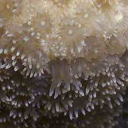 |
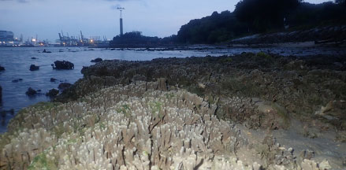 Can form dense fields on the intertidal. Sentosa, Jul 19 |
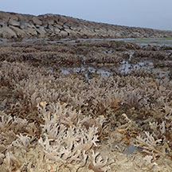 Growing inside the swimming lagoon. Kusu Island, Dec 18 |
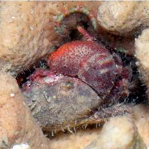 Small creatures living in Branching montipora. Cyrene Reef, Feb 16 Photo shared by Loh Kok Sheng on his blog. |
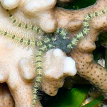 Small creatures living in Branching montipora. Cyrene Reef, Feb 16 Photo shared by Loh Kok Sheng on his blog. |
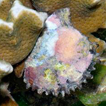 Small creatures living in Branching montipora. Cyrene Reef, Feb 16 Photo shared by Loh Kok Sheng on his blog. |
*Species are difficult to positively identify without close examination.
On this website, they are grouped by external features for convenience of display.
| Branching montipora corals on Singapore shores |
On wildsingapore
flickr
|
| Other sightings on Singapore shores |
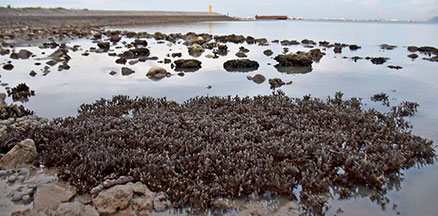 East Coast PCN, Jul 20 |
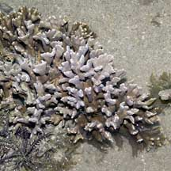 Pulau Hantu, Jan 06 |
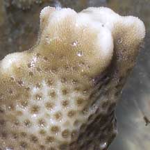 |
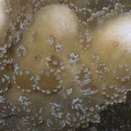 |
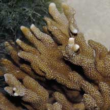 Sisters Island, Dec 03 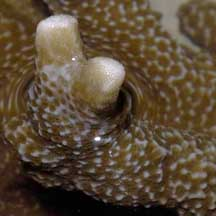 |
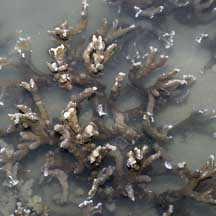 Kusu Island, May 07 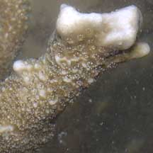 |
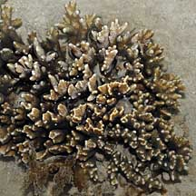 Pulau Semakau, Apr 08 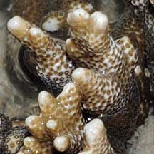 |
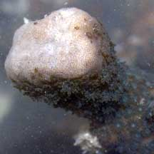 Labrador, Jun 05 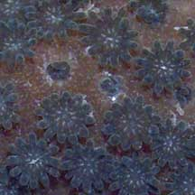 |
 Cyrene Reef, Aug 10  |
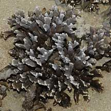 Pulau Tekukor, Jan 10 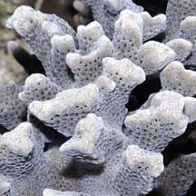 |
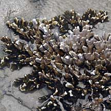 Pulau Pawai, Dec 09 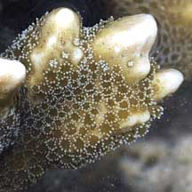 |
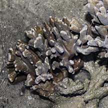 Pulau Sudong, Dec 09 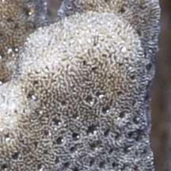 |
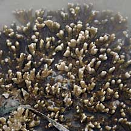 Pulau Sudong, Dec 09 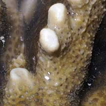 |
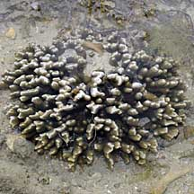 Terumbu Berkas, Jan 10 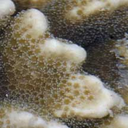 |
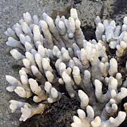 Terumbu Berkas, Jan 10 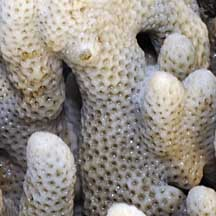 |
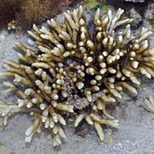 Terumbu Berkas, Jan 10 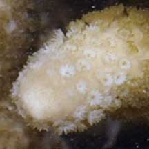 |
Terumbu Berkas, Jan 10 |
Terumbu Berkas, Jan 10 |
Terumbu Berkas, Jan 10 |
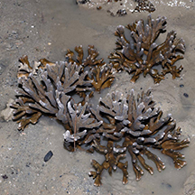 Tanah Merah Ferry Terminal, Jun 15 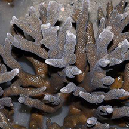 Photo shared by Loh Kok Sheng on facebook. |